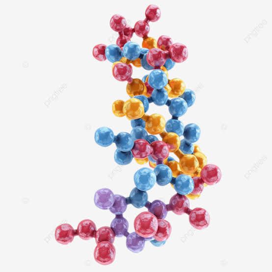
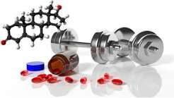

Colesterol LDL e HDL
As moléculas de colesterol associam-se às proteínas sanguíneas (apoproteínas), formando as lipoproteínas HDL ou LDL, que são responsáveis pelo transporte dos esteroides.
LDL
As lipoproteínas LDL carregam o colesterol, que se for consumido em excesso se acumula no sangue.
HDL (bom colesterol)
As lipoproteínas HDL retiram o excesso de colesterol do sangue e levam até o fígado, onde será metabolizado. Por fazer esse papel de "limpeza" as HDL são chamadas de bom colesterol.
Onde encontramos os lipídios

Lipídios na Alimentação
A ingestão de lipídios é fundamental. Os alimentos ricos em lipídios podem ser de origem animal e vegetal. Os alimentos de origem animal fontes de lipídios são: Carnes vermelhas, Peixes, Ovos, Leite, Manteiga
Ceras
Estão presentes nas superfícies das folhas de plantas, no corpo de alguns insetos, nas ceras de abelhas e até mesmo aquela que há dentro do ouvido humano.
Lipídios na Saúde
O Esteróide tem funções importantes na estrutura das membranas celulares, atuam como anti-inflamatórios e na síntese de hormônios esteróides, como os hormônios sexuais.
Exemplos e suas utilizações

Fosfolipídeos
São os principais componentes das membranas das células, é um glicerídeo (um glicerol unido a ácidos graxos) combinado com um fosfato.

Esteróides
São compostos por 4 anéis de carbonos interligados, unidos a hidroxilas, oxigênio e cadeias carbônicas. Como exemplos de esteroides, podemos citar os hormônios sexuais masculinos (testosterona), os hormônios sexuais femininos (progesterona e estrogênio), outros hormônios presentes no corpo e o colesterol.
Funções dos lipídios no organismo
Reserva de energia
Utilizada pelo organismo em momentos de necessidade, e está presente em animais e vegetais.
Isolante térmico
Nos animais as células gordurosas formam uma camada que atua na manutenção da temperatura corporal, sendo fundamental para animais que vivem em climas frios.
Ácidos graxos
Estão presentes nos óleos vegetais extraídos de sementes, como as de soja, de girassol, de canola e de milho, que são usados na síntese de moléculas orgânicas e das membranas celulares.
Absorção de vitaminas
Auxiliam a absorção das vitaminas A, D, E e K que são lipossolúveis e se dissolvem nos óleos. Como essas moléculas não são produzidas no corpo humano é importante o consumo desses óleos na alimentação.